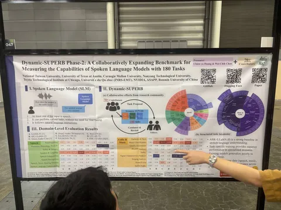
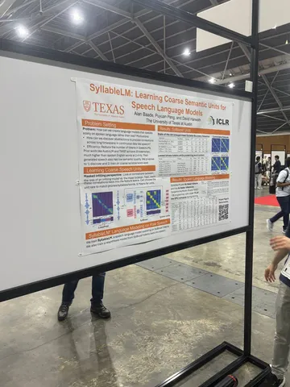
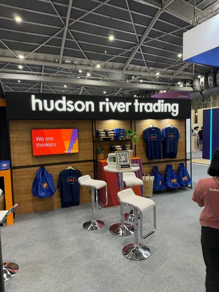
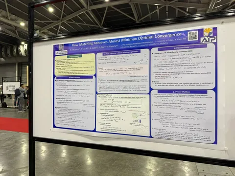

Конференция ICLR 2025 идёт полным ходом. Статей на тему аудио пока не слишком много, но уже есть кое-что любопытное. Не стесняйтесь писать в комментариях — о чём ещё стоит рассказать.
Dynamic-SUPERB Phase-2: A Collaboratively Expanding Benchmark for Measuring the Capabilities of Spoken Language Models with 180 Tasks
Статья про бенчмарк для spoken language моделей. Представляет собой набор из множества задач по описанию разных аспектов для моделей, принимающих аудио на вход.
Авторы мало касаются диалогов или voice-to-voice-сценариев — фокус смещён на задачи распознавания, понимания и другие аспекты обработки аудио.
Число заданий увеличили с 70 до 180, и собираются сделать ещё больше. Оценка построена на иерархии задач, и внутри неё значения скоров осредняются без взвешивания.
Была первая фаза бенчмарка, сейчас идёт вторая, а в третьей говорят о диалоговых замерах.
SyllableLM: Learning Coarse Semantic Units for Speech Language Models
SyllableLM — дистилляция HuBERT с целью уменьшить число токенов и сделать их ближе к слогам. Синтез речи в статье не оценивался, и авторы отметили, что рецензенты тоже грустили по этому поводу. Примеры генерации из полученных токенов есть на сайте, но, судя по всему, не очень хорошие.
Flow Matching Achieves Almost Minimax Optimal Convergence
Рубрика «Если долго
И напоследок — немного печальный тренд
Кажется, квантовые фонды (Hudson River Trading, Jane Street, Jump Trading и прочие) пытаются доминировать: в выставочном центре очень много их стендов. Не теряем надежды увидеть больше научных работ!
Никита Рыжиков и Степан Комков
#YaICLR
